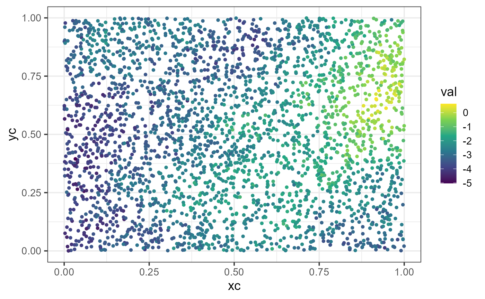
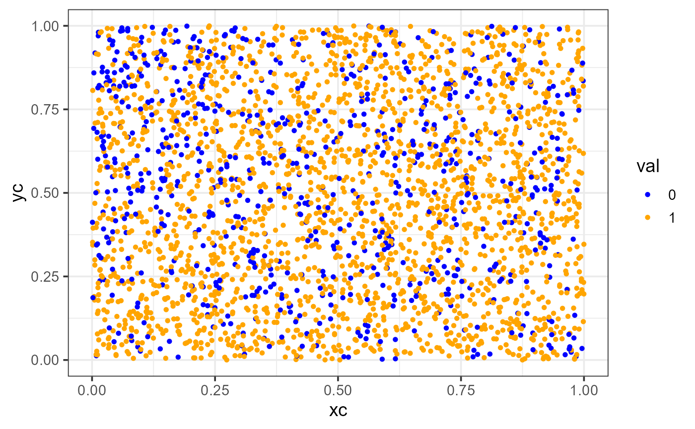

vignettes/articles/simulation.Rmd
simulation.Rmdspmodel is an R package used to fit,
summarize, and predict for a variety of spatial statistical models. This
vignette explores sprnorm(), which simulates spatially
correlated normal (Gaussian) random variables, along with its companions
for simulating non-Gaussian spatial data. Before proceeding, we load
spmodel and ggplot2 by running
If using spmodel in a formal publication or report,
please cite it. Citing spmodel lets us devote more
resources to it in the future. We view the spmodel citation
by running
citation(package = "spmodel")#> To cite spmodel in publications use:
#>
#> Dumelle M, Higham M, Ver Hoef JM (2023). spmodel: Spatial statistical
#> modeling and prediction in R. PLOS ONE 18(3): e0282524.
#> https://doi.org/10.1371/journal.pone.0282524
#>
#> A BibTeX entry for LaTeX users is
#>
#> @Article{,
#> title = {{spmodel}: Spatial statistical modeling and prediction in {R}},
#> author = {Michael Dumelle and Matt Higham and Jay M. {Ver Hoef}},
#> journal = {PLOS ONE},
#> year = {2023},
#> volume = {18},
#> number = {3},
#> pages = {1--32},
#> doi = {10.1371/journal.pone.0282524},
#> url = {https://doi.org/10.1371/journal.pone.0282524},
#> }Before proceeding, we set a reproducible seed:
set.seed(0)sprnorm() is spmodel’s spatial analogue to
base-R’s rnorm() for simulating spatially
correlated normal (i.e., Gaussian) data. sprnorm() requires
an [spcov_params()] object that specifies the (known) spatial covariance
parameters and a data argument with the locations to
simulate at. We define an exponential spatial covariance with dependent
variance (de) of 2, independent variance (ie)
of 0.1, and range of 2, and simulate 3,000 locations completely at
random on the unit square:
n <- 3000
sim_dat <- data.frame(xc = runif(n), yc = runif(n))
params <- spcov_params(
spcov_type = "exponential",
de = 2,
ie = 0.1,
range = 2
)We simulate a single spatially correlated realization by running
sim_dat$val <- sprnorm(params, data = sim_dat, xcoord = xc, ycoord = yc)
ggplot(sim_dat, aes(x = xc, y = yc, color = val)) +
geom_point(size = 1) +
scale_color_viridis_c() +
theme_bw(base_size = 14)
sprnorm() simulates data with mean zero by default; a
non-constant mean can be supplied via the mean argument.
Multiple independent realizations can be simulated at once via the
samples argument, which returns a matrix (one column per
sample) instead of a vector. Generating many samples via
samples this way costs nearly the same (computationally) as
generating a single sample, as the primary cost of factoring an \(n \times n\) covariance matrix occurs only
once and is reused for each sample. For technical details regarding
simulating data in spmodel, see the Technical Details
vignette.
spmodel also provides sprpois(),
sprnbinom(), sprbinom(),
sprbeta(), sprgamma(), and
sprinvgauss() for simulating other spatially correlated
random variables (Poisson, negative binomial, binomial, beta, gamma, and
inverse Gaussian, respectively). Each works by first simulating a latent
process with sprnorm() and then simulating the requested
distribution conditional on that latent process.
We simulate a single spatially correlated realization of binomial data by running
n <- 3000
sim_dat <- data.frame(xc = runif(n), yc = runif(n))
sim_dat$val <- as.factor(sprbinom(params, data = sim_dat, xcoord = xc, ycoord = yc))
ggplot(sim_dat, aes(x = xc, y = yc, color = val)) +
geom_point(size = 1) +
scale_color_manual(values = c("blue", "orange")) +
theme_bw(base_size = 14)